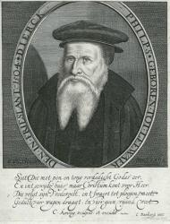

|
¡@ |
¡@ |
|
¡@ |
¡@ |
|
¡@ |
|
|
¡@ |
¡@ |

|
¡@ |
¡@ |
|
¡@ |
¡@ |
|
¡@ |
|
|
¡@ |
¡@ |

| Text: | You Christian Brothers Together |
| Author: | Dirk Philips, c. 1504-1568 |
| Translator: | Doortje Hartemink |
| Versifier: | John J. Overholt |
| Tune: | DIRK (SPANISH AIR) |
| Arranger: | John J. Overholt |
| Short Name: | Dirk Philips |
| Full Name: | Philips, Dirk, 1504-1568 |
| Birth Year: | 1504 |
| Death Year: | 1568 |

| Title: | [Flee as a bird to your mountain] (Spanish) |
| Meter: | 8.7.8.7.8.8.8.8 |
| Incipit: | 15556 55432 13344 |
| Key: | e minor |
| Source: | Spanish Air |
| Copyright: | Public Domain |
| Short Name: | John J. Overholt |
| Full Name: | Overholt, John J., 1918-2000 |
| Birth Year: | 1918 |
| Death Year: | 2000 |
John J. Overholt was born to an Amish family of limited means in the state of Ohio in 1918. As a child he was soon introduced to his father's personal collection of gospel songs and hymns, which was to have a marked influence on his later life. With his twin brother Joe, he early was exposed to the Amish-Mennonite tradition hymn-singing and praising worship.
An early career in Christian service led to a two-year period of relief work in the country of Poland following World War II. During that interim he began to gather many European songs and hymns as a personal hobby, not realizing that these selections would become invaluable to The Christian Hymnary which was begun in 1960 and completed twelve years later in 1972, with a compilation of 1000 songs, hymns and chorales. (The largest Menn. hymnal).
A second hymnal was begun simultaneously in the German language entitled Erweckungs Lieder Nr.1 which was brought to completion in 1986. This hymnal has a total of 200 selections with a small addendum of English hymns.
Mr. Overholt married in 1965 to an accomplished soprano Vera Marie Sommers, who was not to be outdone by her husband's creativity and compiled a hymnal of 156 selections entitled Be Glad and Sing, directed to children and youth and first printed in 1986.
During this later career of hymn publishing, Mr. Overholt also found time for Gospel team work throughout Europe. At this writing he is preparing for a 5th consecutive tour which he arranges and guides. The countries visited will be Belgium, Switzerland, France, Germany, Poland, USSR and Romania.
Mr. Overholt was called to the Christian ministry in 1957 and resides at Sarasota, Florida where he is co-minister of a Beachy Amish-Mennonite Church.
Five children were born to this family and all enjoy worship in song.
--Letter from Hannah Joanna Overholt to Mary Louise VanDyke, 10 October 1990, DNAH Archives. Photo enclosed.
|
Dirk Philips
|
|
|---|---|
 |
|
| Born |
1504 |
| Died |
1568
Het Falder
|
| Occupation | Anabaptist writer and theologian |
Dirk Philips (1504¡V1568) was an early Anabaptist writer and theologian. He was one of the peaceful disciples of Melchior Hoffman and later joined Menno Simons[1] in laying out practical doctrines for what would become the Mennonite church.
Dirk Philips was born in Leeuwarden in 1504, the son of a priest (it was not uncommon at the time for a priest to have unofficial wives and families). He was a Franciscan friar. He joined the Anabaptist Brotherhood in 1533 and became an elder in 1534. In 1537, he was named one of the outstanding Anabaptist leaders. In 1561, he was described as an old man, not very tall, with a grey beard and white hair. He died in Het Falder in 1568.
He was the leading theologian of his time among Dutch Mennonites. He was known to be very systematic in his thinking, and very strict and unwavering in his beliefs. There were two key themes to his theology: the word of scripture, and the word incarnate in Jesus. Like other Anabaptists, he gave Christ pre-eminence. He was not as charming or friendly as Menno Simons.
He identifies seven ordinances of the church:
He believed in strict adherence to the ban or shunning. This is when open sinners are expelled from the church until they repent. He felt this was necessary in order to maintain the purity of the church. His emphasis on the ban and the purity of the community makes Dirk Philips' writings more popular with the Old Order Amish. He believed in the absolute opposition between the church and the world, and therefore that believers should expect persecution.
https://en.wikipedia.org/wiki/Dirk_Philips
¡@
¡@